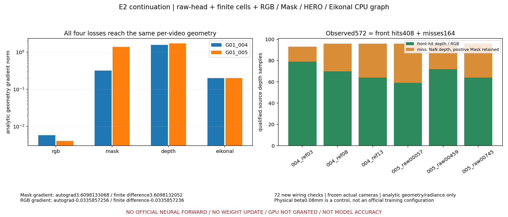
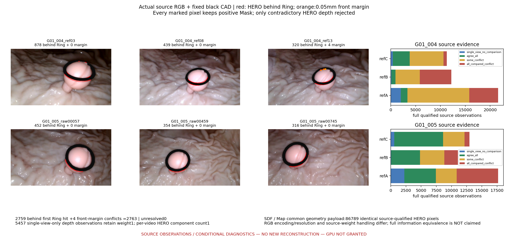

E2 CPU continuation — GPU NOT GRANTED
Analytic wiring and source input contracts; no new neural reconstruction.
Fig5_joint_loss_CPU.png

Fig6_source_conflicts_common_HERO.png

Previous E2: Fig1_C2a_finite_opacity.png

Previous E2: Fig2_actual_ray_semantics.png

Previous E2: Fig3_C2b_shared_source_loss.png

Previous E2: Fig4_Map_M0_M4_inputs.png